Presentación Estructurada de Séneca LOMLOE
Diseñada de lo más general a lo específico con guion de locución listo para que grabes tus clases o tutoriales de Religión en Infantil y Primer Ciclo de Primaria.
Tu Profesor Particular: Guía Paso a Paso en Séneca
Haz clic en cada paso para ver la ruta exacta en Séneca, su pantallazo real y la diferencia práctica entre Infantil y 1º-2º de Primaria.
Flashcards Visuales de Estudio
Haz clic en cada tarjeta para girarla y repasar los conceptos clave de Séneca LOMLOE aplicados a Religión.
Mapas Mentales con Pantallazos y Fotografías
Elige el mapa mental que quieras visualizar: arquitectura general de Séneca, flujo específico en Infantil o flujo en 1º y 2º de Primaria.
NotebookLM, Google Vids y Manuales Oficiales
Todos tus materiales centralizados para consultar dudas en cualquier momento.
Cuaderno en NotebookLM
Contiene 15 videotutoriales actualizados de YouTube + el PDF oficial del BOE del Currículo de Religión Católica LOMLOE.
Abrir tu NotebookLM →Currículo Oficial Religión (BOE LOMLOE)
Resolución de 21 de junio de 2022 con competencias específicas, criterios de evaluación y saberes básicos de Infantil y Primaria.
Abrir PDF descargado →Blog Oficial Séneca Profesorado
Guías e infografías oficiales de la Consejería de Desarrollo Educativo (Junta de Andalucía).
Visitar Averroes Séneca →Mi Web de Reli Ana · 3 Años
Tu página web integrada directamente dentro del entorno para tener tus recursos de Religión de 3 años siempre a mano.
Enlaces Útiles: Séneca y Religión en Málaga
Directorio seleccionado de portales oficiales para dominar Séneca, formarte en el CEP de Málaga y preparar tus clases de Religión en Infantil y Primaria.
A. Aprender Séneca y Formación (Junta de Andalucía · CEP Málaga)
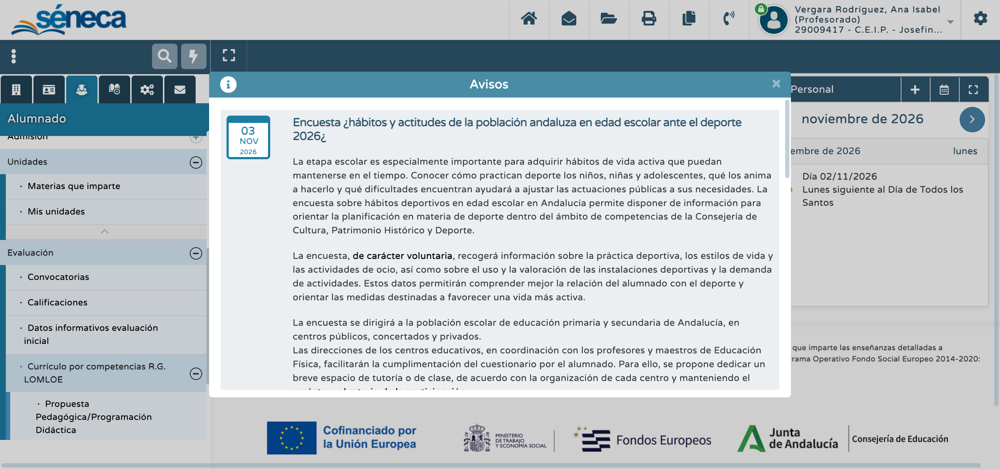
Acceso Oficial a Séneca
Portal oficial de entrada a la plataforma Séneca de la Consejería de Desarrollo Educativo.
Entrar en Séneca ↗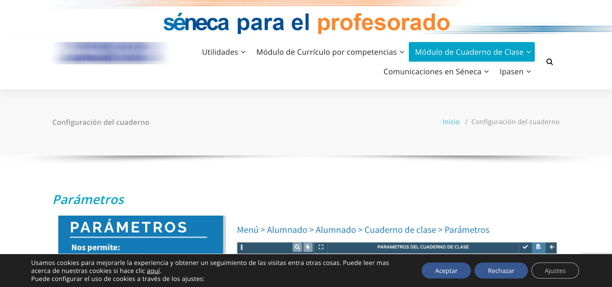
Blog Séneca Profesorado (Averroes)
Guías paso a paso e infografías oficiales sobre el Cuaderno de Clase, evaluación criterial y horarios.
Abrir Blog Séneca ↗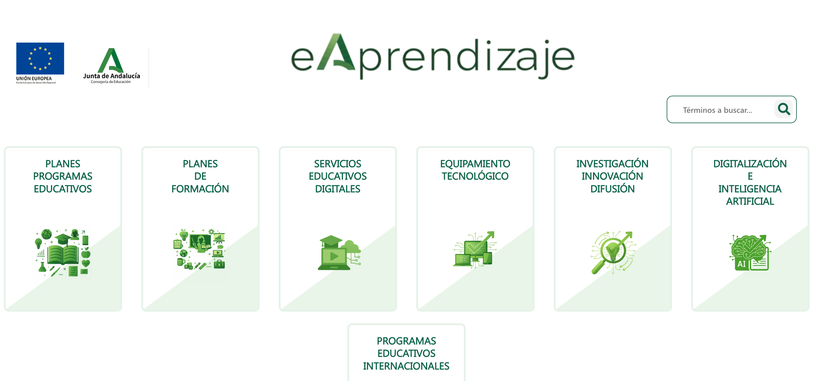
Portal eAprendizaje
Tutoriales oficiales para programas educativos, TDE (Plan de Actuación Digital) y herramientas docentes.
Ver Portal eAprendizaje ↗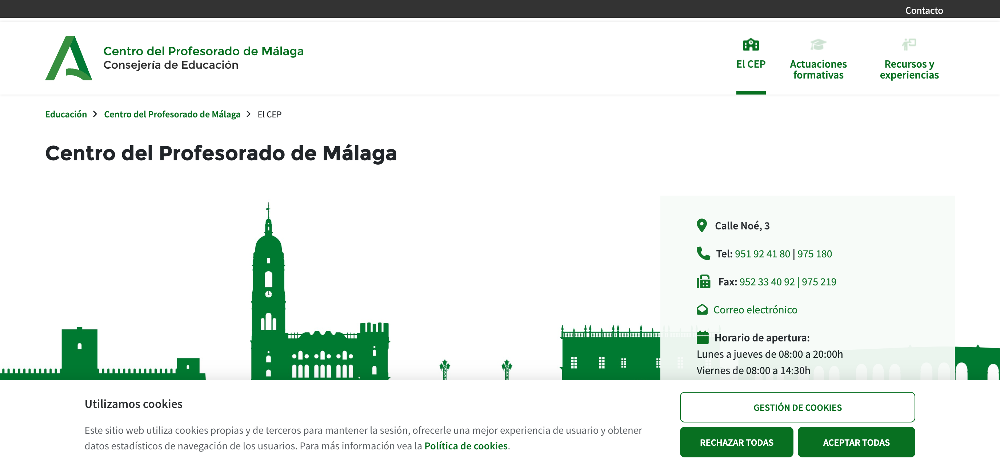
CEP de Málaga (Formación)
Centro del Profesorado de Málaga: cursos, jornadas formativas y recursos provinciales.
Visitar CEP Málaga ↗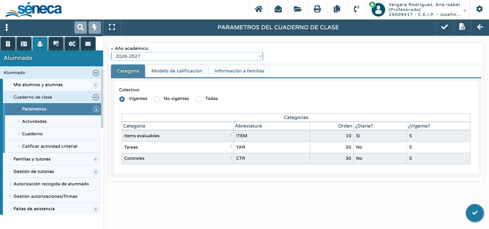
Módulo Séneca-CEP
Acceso directo al módulo de inscripción en cursos del CEP, consultas de listados y certificados.
Ir a Séneca-CEP ↗B. Recursos para tus clases de Religión en Málaga (Infantil y Primaria)
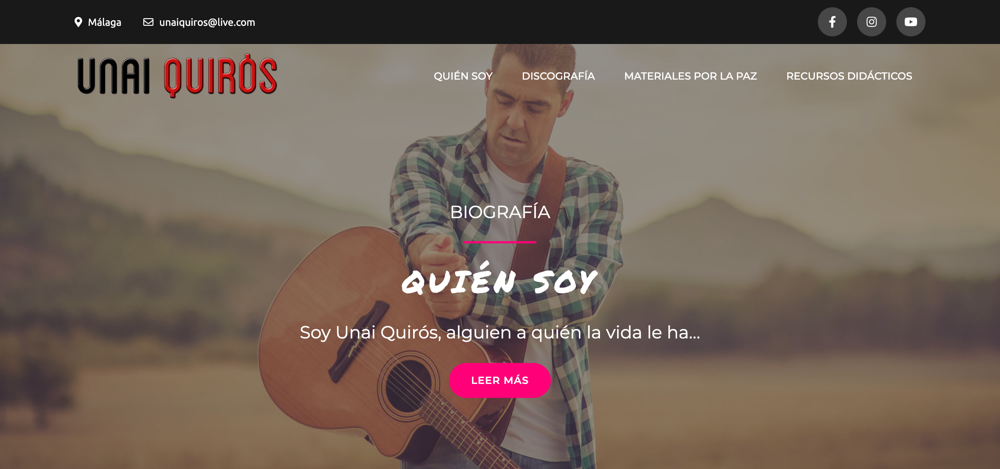
Unai Quirós · Web Oficial (Málaga)
Cantautor católico y profesor en Málaga: discos, letras, canciones para el Día de la Paz y recursos de aula.
Visitar unaiquiros.com ↗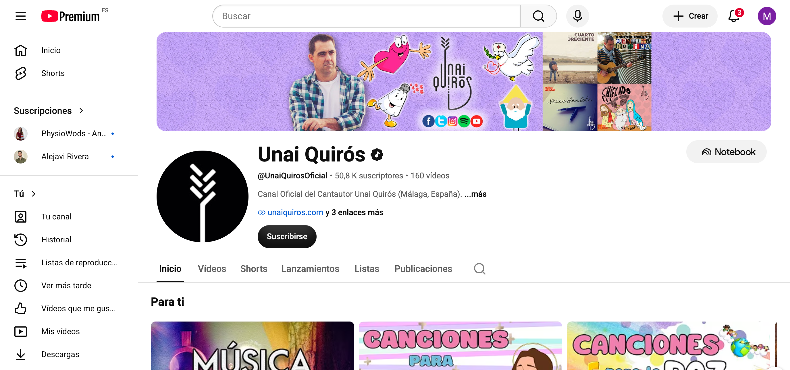
Unai Quirós · Canal de YouTube
Videoclips, cantos para Infantil y Primaria, y vídeos realizados junto a Fano para tus clases.
Abrir YouTube de Unai Quirós ↗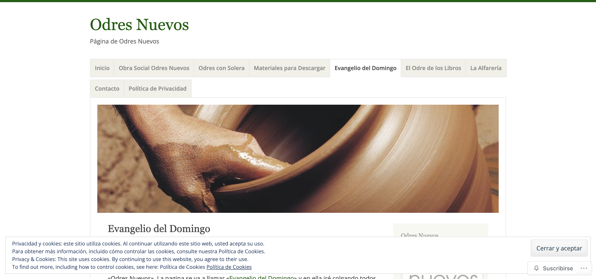
Dibujos de Fano (Odres Nuevos)
Ilustraciones semanales de Patxi Velasco Fano para el Evangelio del domingo, Adviento, Cuaresma y Pascua (en color y B/N).
Ver Dibujos de Fano ↗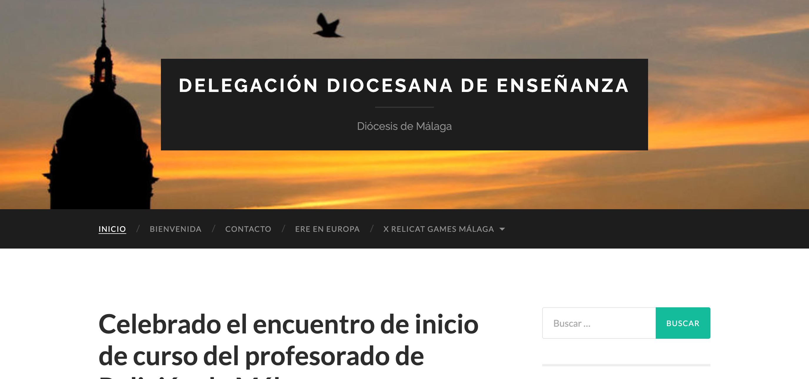
Delegación de Enseñanza Málaga (RECA)
Portal oficial de la Delegación Diocesana de Enseñanza de Málaga: circulares, avisos y apoyo al profesorado.
Visitar RECA Málaga ↗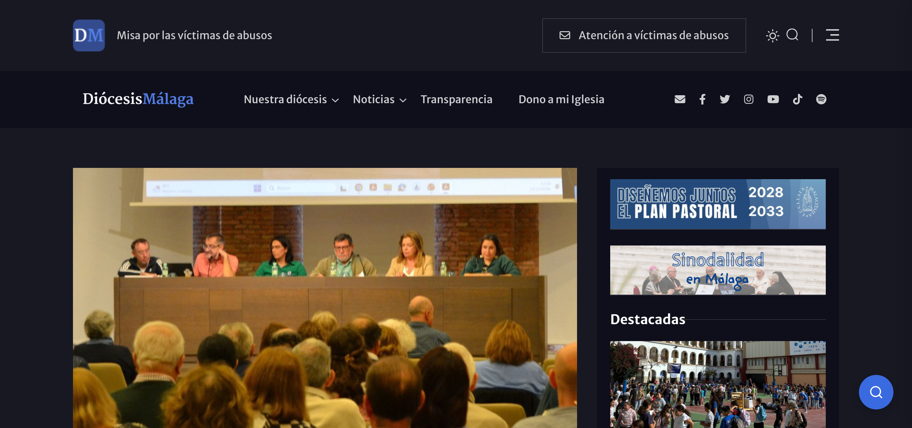
Diócesis de Málaga · Educación
Noticias, encuentros de profesores de Religión, jornadas Innovareli y campañas de matriculación.
Abrir Diócesis de Málaga ↗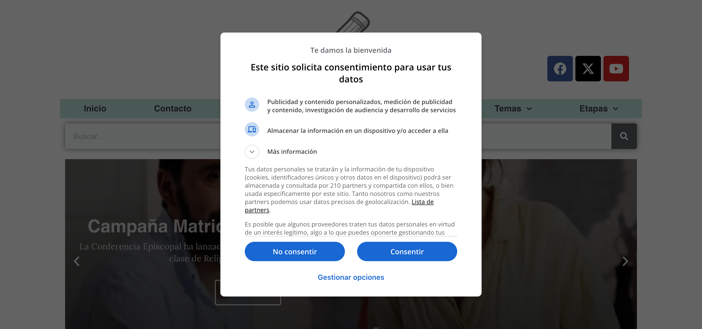
Aula de Reli (LOMLOE y TIC)
Banco de recursos digitales, actividades interactivas y materiales de Religión para Infantil y Primaria.
Visitar Aula de Reli ↗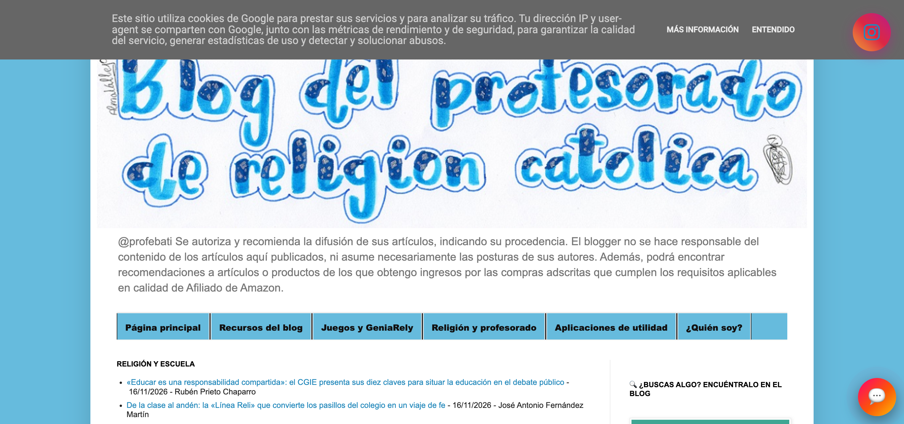
Profesorado de Religión (Blog)
Amplio repositorio de recursos, dinámicas, juegos y materiales de Religión Católica organizados por niveles.
Visitar Profesorado de Religión ↗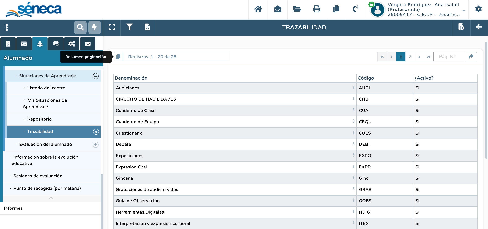
Currículo Oficial Religión (BOE LOMLOE)
Resolución oficial del BOE con competencias específicas, criterios y saberes básicos de Infantil y Primaria.
Abrir PDF del BOE ↗C. Canciones (3, 6 y 7 años), Animaciones y Juegos de Clase
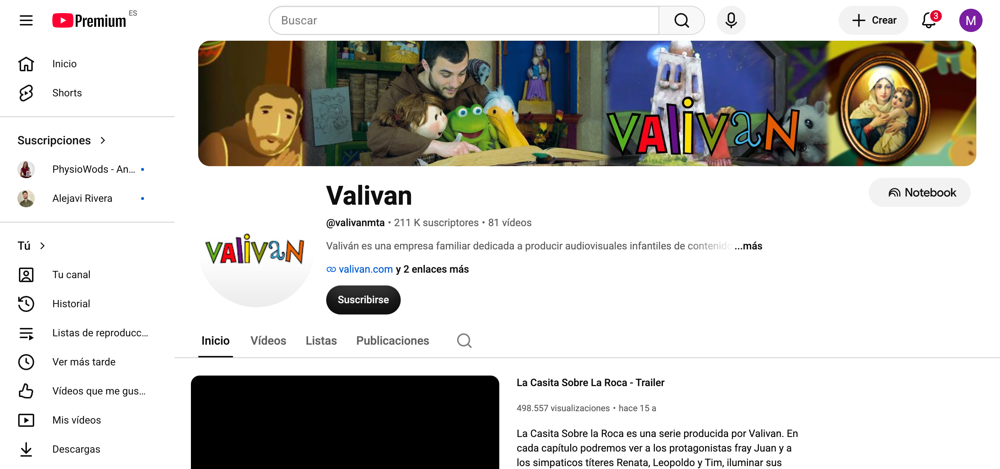
Valivan · La Casita sobre la Roca (YouTube)
Canciones católicas infantiles, parábolas animadas y capítulos completos ideales para 3, 6 y 7 años.
Abrir Valivan en YouTube ↗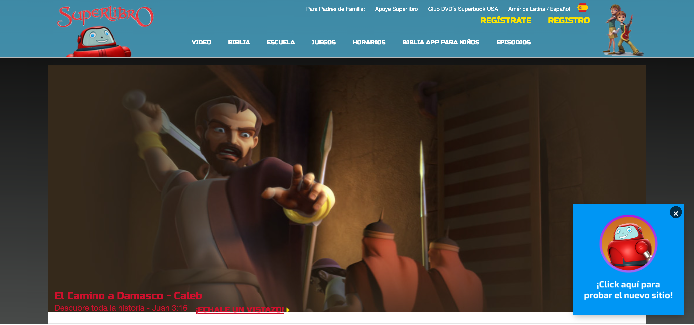
Superlibro · Vídeos y Juegos (Web Oficial)
Episodios animados de la Biblia en HD y juegos interactivos para proyectar en clase de 1º y 2º de Primaria.
Ir a Superlibro.tv ↗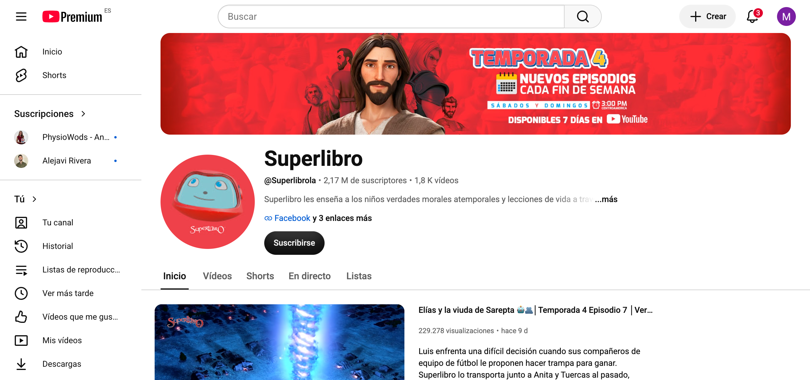
Superlibro · Canal de YouTube en Español
Historias bíblicas animadas con Luis, Anita y Tuercas, cortos y canciones para el aula.
Abrir Superlibro YouTube ↗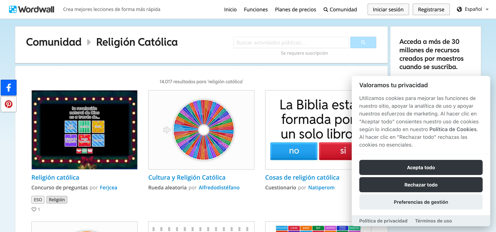
Wordwall · Juegos de Religión Católica
Ruletas, laberintos, emparejamientos y cuestionarios interactivos listos para pizarra digital (Infantil y Primaria).
Jugar en Wordwall ↗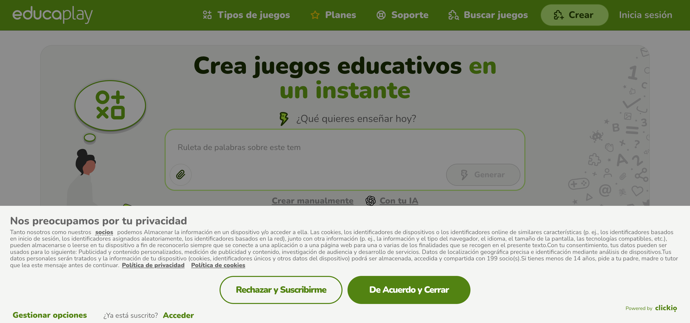
Educaplay · Actividades Multimedia
Juegos tipo Froggy Jumps, adivinanzas, mapas interactivos y sopas de letras de Religión Católica.
Explorar Educaplay ↗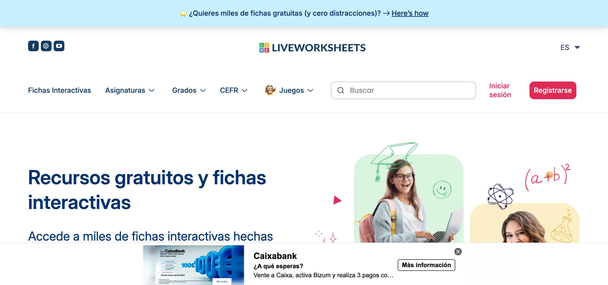
Liveworksheets · Fichas Interactivas
Fichas digitales autocorregibles de Religión Infantil (3 años) y 1º-2º de Primaria para repasar jugando.
Buscar fichas en Liveworksheets ↗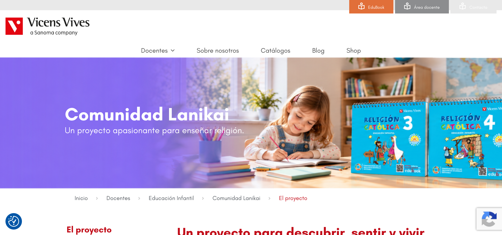
Proyecto Lanikai · Infantil (Vicens Vives)
Recursos, muestras, canciones y actividades de Religión Católica para 3, 4 y 5 años con la mascota Lani.
Ver Lanikai Infantil ↗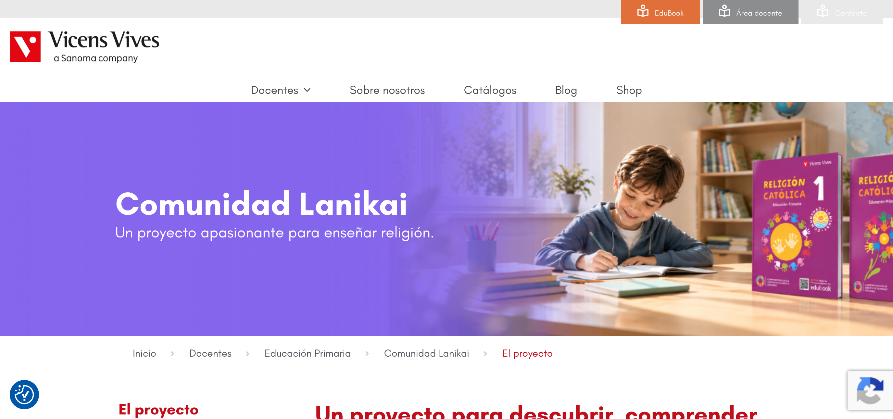
Proyecto Lanikai · Primaria (Vicens Vives)
Propuestas competenciales LOMLOE, unidades de muestra y recursos multimedia para 1º y 2º de Primaria con Kai.
Ver Lanikai Primaria ↗